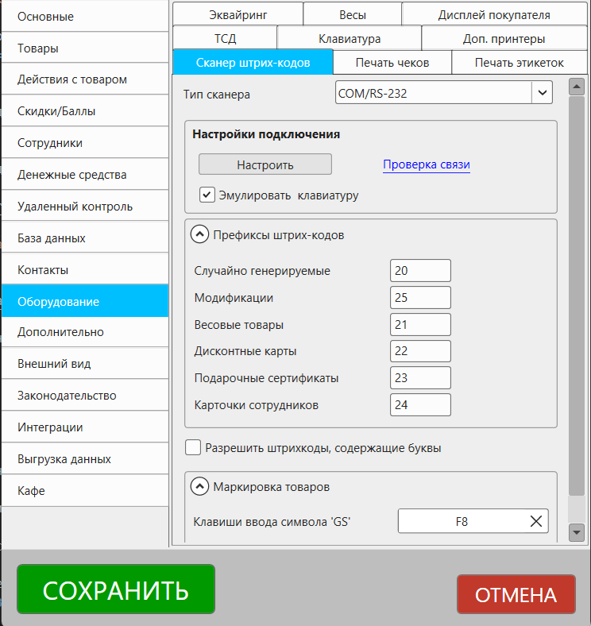

Описание раздела настроек "Оборудование – Сканер штрихкодов". Открыть настройки можно из главного окна программы Файл – Настройки.
Перечень сканеров, которые можно использовать с программой.

Важно
Доступность некоторых опций зависит от типа выбранного устройства и типа подключения.
Тип сканера
Тип подключения сканера штрихкодов.
Полезные материалы
Настройки подключения
Данный раздел доступен только при выборе типа подключения COM/RS-232.
Настроить
Раздел для настройки подключения к COM-порту, через который работает сканер.
Проверка связи
Отображает окно, для проверки работы сканера
Эмулировать клавиатуру
Если опция выключена, то сканирование штрихкода доступно только в заранее запрограммированные поля в программе. Например, это поле поиска на главной форме, поле "штрихкод" в карточке товара и некоторые другие.
Если опция включена, то программа эмулирует нажатие клавиш клавиатуры, которые соответствуют символам, посылаемым сканером. В таком режиме сканирование штрихкодов будет происходить в любое поле, в которое установлен курсор.
Префиксы штрихкодов
Под префиксом штрихкода обычно подразумевается первые две цифры самого штрихкода. Префиксы необходимы для того, чтобы программа смогла идентифицировать к какому типу сущности относится такой штрихкод и выбирает соответсвующую логику.
Случайно генерируемые
Префикс устанавливается для штрихкодов, которые генерируются программой. Например, штрихкод можно сгенерировать из карточки товара или при загрузке товаров из накладной Excel.
Весовые товары
Префикс используется для весовых товаров, этикетки для которых печатаются на весах с печатью этикеток.
Такие штрихкоды должны соответствовать стандарту EAN13 и иметь формат PPAAAAABBBBBC, где:
Формат весового штрихкода EAN13:
PPAAAAABBBBBC
PP – две цифры префикса
AAAAA – PLU-код товара
BBBBB – вес товара в граммах
C – контрольная сумма для EAN13
Полезные материалы
Дисконтные карты
Префикс для дисконтных карт и идентификации покупателей.
Используется при генерации штрихкода покупателя в карточке контакта.
При сканировании штрихкода с таким префиксом на главной форме в поле поиска программа начнет искать покупателя, а не товар.
Подарочные сертификаты
Префикс для подарочных сертификатов. С этим префиксом генерируются штрихкоды подарочных сертификатов.
При сканировании штрихкода с таким префиксом на главной форме в поле поиска будет начат поиск подходящего подарочного сертификата, а не товара.
Карточки сотрудников
Префикс для авторизации сотрудников по штрихкоду.
Устанавливается для штрихкодов при генерации в карточке сотрудника.
Полезные материалы
Разрешить штрихкоды, содержащие буквы
Улучшает поиск по штрихкодам в случаях, когда они содержат буквы.
Маркировка
Клавиша ввода символа 'GS'
Настройка клавиши, эмуляция нажатия которой происходит при распознавании управляющего символа в коде маркировки.
Проверить 2D сканер для маркировки
Раздел для проверки двумерного сканера для корректного распознавания кодов маркировки товаров.
Полезные материалы
Вопросы и ответы
Почему сканер продолжает работать, даже если указать "нет" для типа сканера?
Стоит понимать, что независимо от того, какой тип сканера будет указан в настройках, сканеры, работающие в режиме эмуляции клавиатуры, продолжат работать в программе. Но рекомендуется указывать корректный тип подключения для корректной работы программы.
Т.е. если даже указать тип сканера "нет", но подключить сканер, работающий в режиме "эмуляция клавиатуры", то он будет работать в программе, т.к. чисто технически для программы не отличим от клавиатуры.